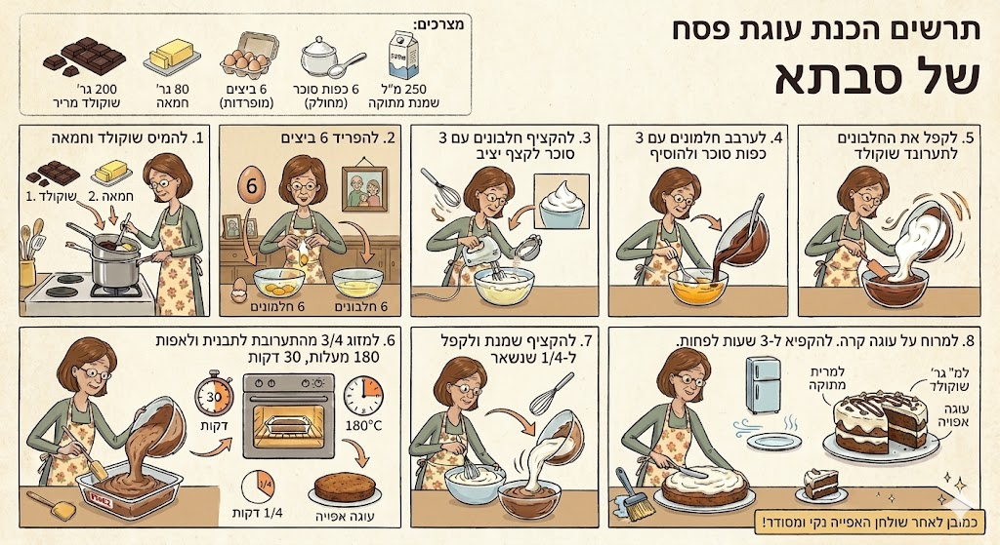

עוגת הפסח של סבתא

מצרכים:
200 גרם שוקולד מריר
80 גרם חמאה
6 ביצים
6 כפות סוכר
250 מ"ל שמנת מתוקה
אופן ההכנה:
להמיס שוקולד וחמאה יחד.
להפריד את 6 הביצים.
להקציף חלבונים עם 3 כפות סוכר לקצף יציב.
לערבב חלמונים עם 3 כפות סוכר ולהוסיף את השוקולד המומס.
לקפל את החלבונים לתוך תערובת השוקולד והחלמונים.
לשמן תבנית, למזוג 3/4 מהתערובת ולאפות ב-180 מעלות במשך 30 דקות.
להקציף שמנת מתוקה ולקפל לתוך ה-1/4 שנותר מהבלילה.
לאחר קירור, למרוח את הקצפת על העוגה ולשמור בהקפאה.
הערה מסבתא:
להקפיא ל-3 שעות לפחות לפני ההגשה! ❄️
כמובן לאחר שולחן האפייה נקי ומסודר!